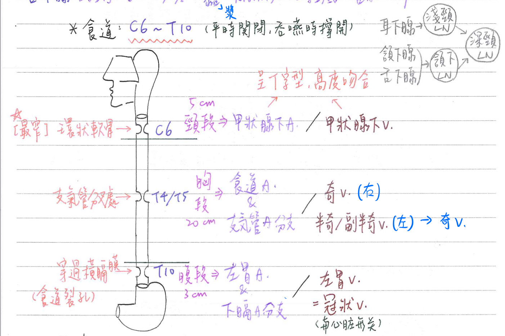
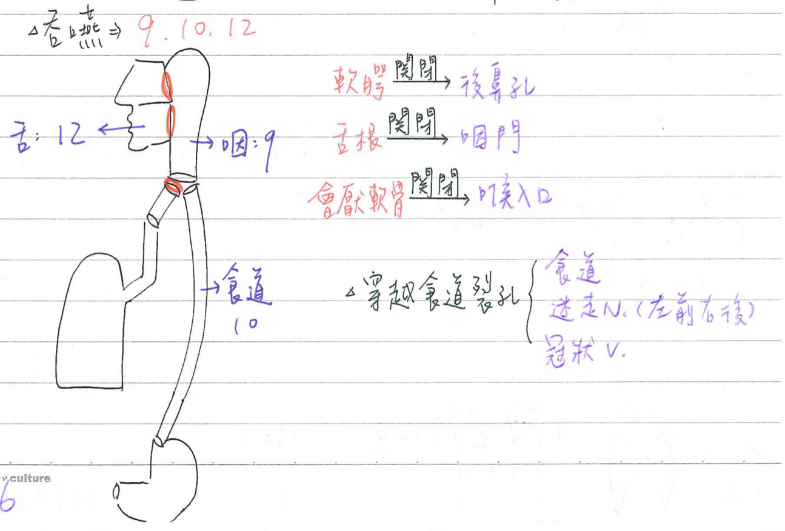
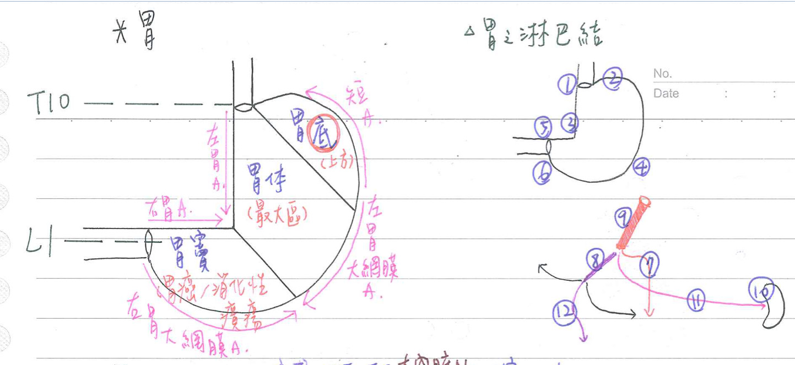
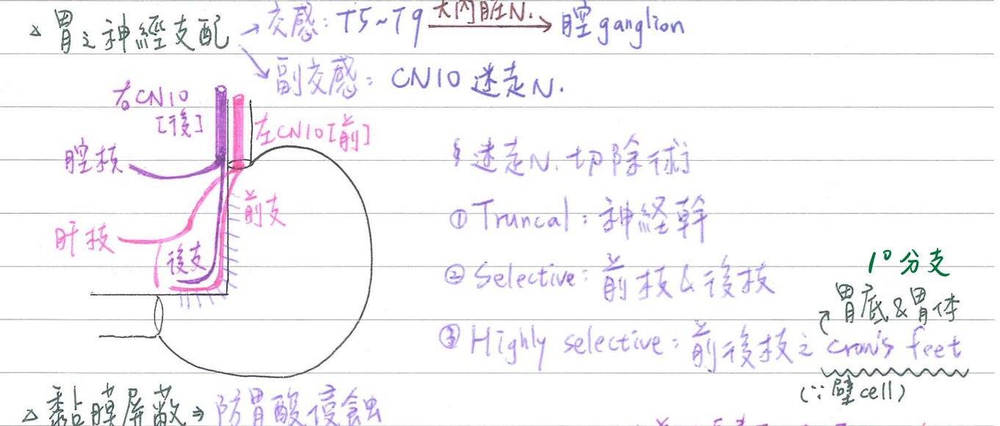
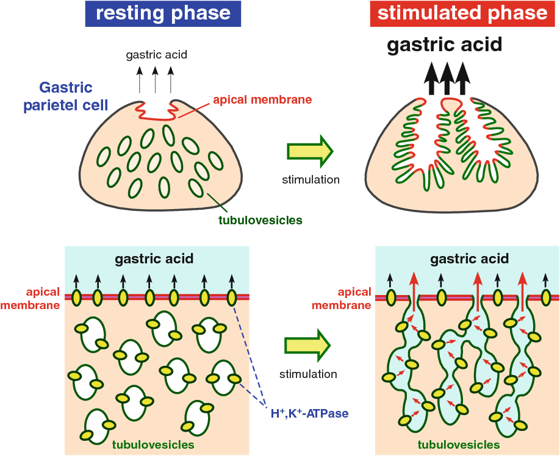
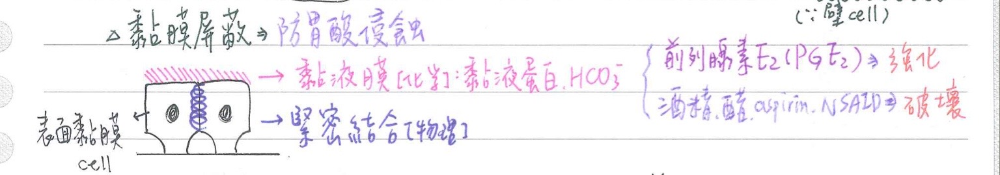

🍱 消化系統-食道、胃
食道(esophagus)
| 長度 | 神經支配 | 血液供應(動脈) | 血液供應(靜脈) | 肌肉種類 | 淋巴引流 | |
|---|---|---|---|---|---|---|
| 頸段 | 5cm | 返喉N | 甲狀腺下A(←←鎖骨下A) | 甲狀腺下V | 骨骼肌 | 深頸LN/內頸LN |
| 胸段 | 20cm | 交感：上頸神經節、下頸神經節 副交感：迷走N | 1. 食道A(←胸主A) 2. 支氣管A(←胸主A) | 右：奇V 左：半奇V/副半奇V→奇V. | 骨骼肌&平滑肌 | 上：氣管旁LN(partacheal LN) 中：氣管隆突下LN(subcarinal LN) 下：食道旁LN(paraesophageal LN) |
| 腹段 | 2cm | 交感：腹腔神經節 副交感：迷走N | 左胃A分枝 下膈A分枝 | 左胃V =冠狀V(coronary a) | 平滑肌 | 左胃LN |
- 食道A、食道V：呈T字型分布，高度吻合→即便切除很長一段，仍不會使食道缺血
- 食道淋巴引流：縱向分布(上2/3→向頭端；下1/3→向尾端)
💡
冠狀V是左胃V的別名，不在心臟！！
食道-性質
- 位於頸部、胸腔(縱膈腔後方，向下略朝前朝左)、腹腔
- 上起喉咽，下迄賁門；C6~T10(/T11)之高度
- [重點]穿過橫膈膜之食道裂孔；具迷走N伴行(左前右後) <cf>迷走N在胸腔時是左右並行
- 平常關閉，吞嚥時才撐開(因為沒有軟骨支撐)
- 不具消化或吸收功能，僅為食物之通道
[重點]食道-三個狹窄處(constrictions)：異物最易卡住
- 上：環狀軟骨後(C6高度)；最窄(直徑15mm)；咽與食道交接處
- 中：氣管分叉處後(T4/T5高度)；直徑16mm)；主動脈弓&左主支氣管
- 下：穿過橫膈膜處(T10高度)；直徑17mm)；橫膈膜食道裂孔

[重點]吞嚥
- 三階段：
- 口腔期：隨意
- 咽期：不隨意
- 食道期：不隨意
- 吞嚥時：
- 舌根：關閉咽門
- 軟顎：關閉後鼻孔
- 會厭軟骨：關閉喉入口
- 與吞嚥相關腦神經：CN9, 10, 12
- CN9：咽部肌肉
- CN10：食道肌肉
- CN12：舌外在肌(例外：腭舌肌是CN10支配)

胃(stomach)
- 位置：於上腹中線偏左(腹上區、臍區、左季肋區)
食道-構造：呈J字形
- 胃底(fundus)：胃上方
- 胃體(body)：最大區
- 胃竇(antrum)=胃室：胃癌&消化性潰瘍最好犯處
- 賁門(cardia)：上接食道處，約 T10高度
- 幽門(pylorus)：下接12指腸，約L1高度
- 胃小彎(lesser curvature)：右上凹；臨小網膜(=胃肝韌帶)
- 胃大彎(greater curvature)：左下凸；臨大網膜(=胃橫結腸韌帶)
胃的血液供應
- 胃小彎側：
- 左胃A←腔動脈幹
- 右胃A←總肝A(←腔動脈幹)
- 胃大彎側：
- 短胃A←脾A←腔動脈幹
- 左胃大網膜A←脾A(←腔動脈幹)
- 右胃大網膜A←胃十二指腸A(←總肝A←腔動脈幹)

[重點]胃-淋巴結：依Japanese Research Society for Gastric Cancer分群
| group 1=右賁門LN | group 7=左胃動脈LN |
| group 2=左賁門LN | group 8=總肝動脈LN |
| group 3=胃小彎LN | group 9= 腔動脈LN |
| group 4=胃大彎LN | group 10=脾門LN |
| group 5=幽門上LN | group 11= 脾動脈LN |
| group 6=幽門下LN | group 12=肝12指腸韌帶LN |
胃-神經支配
- 副交感神經：
- 左(前)迷走神經幹：
- 前枝(ant. n. of Laterjet)
- 肝枝(hepatic br.)→幽門枝(pyloric br.)：使胃能排出食物
- 右(後)迷走神經幹：
- 後枝(post. n. of Laterjet)
- 腹腔枝(celiac br.)
- [重點]迷走神經切除術(vagotomy)：
- truncal vagotomy：截斷在其前的迷走神經幹(位於分支叉點上方)
- selective vagotomy：截斷其前枝及後枝(ant. & post. Laterjet)
- highly selective vagotomy：截斷其前後枝之1°分枝(crow feet)
- 左(前)迷走神經幹：

- 交感神經：大內臓N(T5~T9)→腔神經節
- 一般內臓感覺(GVA)：可經交感神經(大內臓N)&副交感神經(迷走N)之路徑傳遞
- 胃飽足感：主由★[106-1]迷走N傳遞
- 胃炎疼痛：主由大內臓N(T5~T9)傳遞
胃-各種分泌腺體
- 胃小凹(gastric pit)：胃黏膜表面具諸多深入固有層之凹陷
- 胃腺(gastric gland)：開口於胃小凹，依解剖位置分三種
- 賁門腺(cardiac gland)：位於賁門
- 主要為複式管腺型腺體；注入之胃小凹較淺短
- ★分泌黏液細胞(mucus-secreting cell)為主(也可能有少許腸內分泌細胞)
- ★[110-1]幽門腺(pyloric gland)：位於胃竇、幽門
- 主為複式管腺型腺體；注入之胃小凹較深長
- 具分泌黏液細胞&腸內分泌細胞(enteroendocrine cell)
- 胃底腺(fundic gland)=中間腺(intermediate gland)=胃腺：位於胃底；主要為單式管腺型腺體
- 頸部(neck)：含幹細胞(stem cell)、頸黏液細胞、壁細胞
- 底部(base)：含壁細胞、主細胞、腸內分泌細胞
- 賁門腺(cardiac gland)：位於賁門

胃-各種細胞
- 幹細胞(stem cell)：可再生、分化下列細胞；★位於胃腺頸部
- 表面黏液细胞(surface mucous cell)：廣佈於胃黏膜表面及胃小凹
- 分泌不可溶混濁黏液(insoluble mucus；含黏膜蛋白、HCO3-)，胞漿頂端之分泌顆粒很明顯
- 具tight junction→防止胃酸侵蝕
- 頸黏液細胞(neck mucous cell)=孔穴細胞(foveolar cell)：
→分泌可溶清澈黏液(soluble mucus)；胞漿頂端之分泌顆粒較不明顯 - 主細胞(chief cell)=產酶細胞(zymogenic cell)
- 呈嗜鹼性(含顆粒型內質網[rER])
- 製造胃蛋白酶原(pepsinogen)、脂肪酶(lipase)
- 壁細胞(parietal cell)=產酸細胞(oxyntic cell)：★胃黏膜比例最多的細胞
- ★★具豐富細胞內小管(表面有微絨毛突起) & 管囊泡系統(tubulovesicular system)
→呈”荷包蛋”外觀(fried egg)；和分泌作用的旺盛程度有關- 管囊泡(tubulovesicle)：其細胞膜為H+ pump儲存處
→可嵌入小管的細胞膜上，增加表面積& H+ pump數量
- 管囊泡(tubulovesicle)：其細胞膜為H+ pump儲存處
- ★製造胃酸(HCl-)&內在因子(intrinsic factor；助B12吸收)
- 胃酸(HCl-)：活化胃蛋白酶；殺菌；幫助鐵吸收(使Fe3+變成Fe2+)
- 全胃切除術：易缺乏B12、Fe2+
- ★呈嗜酸性(因為粒線體多)
- ★★具豐富細胞內小管(表面有微絨毛突起) & 管囊泡系統(tubulovesicular system)
- 腸內分泌細胞(enteroendocrine cell)：
- G细胞(主要位於★胃竇)：胃泌激素(gastrin)→幫助胃的分泌及運動
- D細胞(胃竇、胃體)：體制素(somatostatin)→抑制胃酸分泌
- ECL(enterochromaffin-like)細胞(主位於胃體)：分泌組織胺(histamine)→促進胃酸分泌
- EC (enterochromaffin)細胞(@胃竇、胃體)：血清張力素(serotonin)、substance P→促進胃腸運動
- A細胞(@胃竇、胃體)：升糖激素(glucagon)→促進血糖上升
胃黏膜攻擊因子：鹽酸(HCI) [此段可直接看何宣生理]
- 壁細胞：產生酸(H+)
- 需細胞內的碳酸酥酶(carbonic anhydrase)的催化
- C02 + H20 →H2CO3 → H+ + HCO3-
- 需H+-K+ ATPase(主動運輸)幫忙將H+分泌至胃腔中
- 分泌Cl至胃腔中為被動過程(輔助型擴散)
- Ach、組織胺(histamine)、胃泌素(gastrin)直接作用於壁細胞使鹽酸(H+)產生增加。
- 體制素(somatostatin)、前列腺素(PGE2)：使鹽酸產生減少
- 需細胞內的碳酸酥酶(carbonic anhydrase)的催化
胃黏膜防禦因子：黏膜屏蔽(mucosa barrier)
- 由表面黏膜細胞(surface mucous cell)形成
- 構成：
- 物理屏蔽=緊密結合(tight junction)：細胞頂端彼此密合
- 化學屏蔽=黏液膜(mucous membrane)：黏液含黏液蛋白(mucin)、HCO3-等
- 影響因子：
- 強化黏膜屏蔽：PGE2
- 破壞黏膜屏蔽：酒精、醋、NSAID
